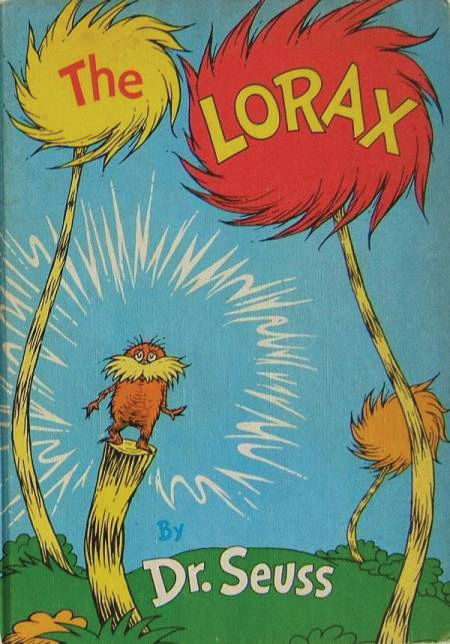
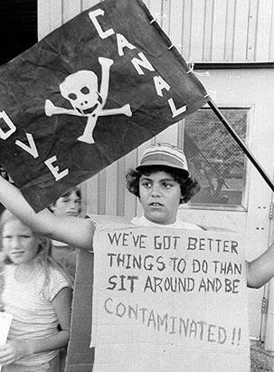
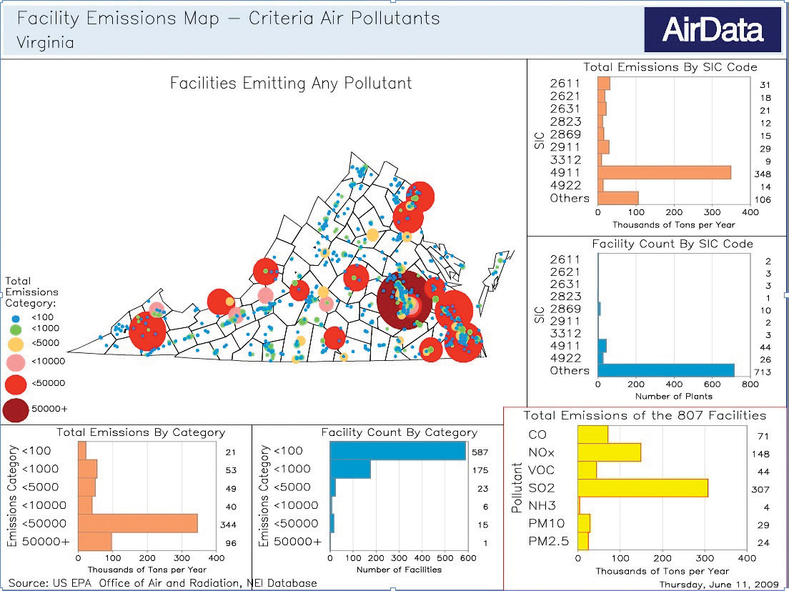

In response to strong public support for environmental protection, newly elected president Nixon, in his 1970 State of the Union address, declared that the dawning decade of the 1970s “absolutely must be the years when America pays its debt to the past by reclaiming the purity of its air, its waters and our living environment. It is literally now or never.”Richard Nixon Foundation, “RN In ‘70—Launching the Decade of the Environment,” The New Nixon Blog, January 1, 2010, accessed March 23, 2011, http://blog.nixonfoundation.org/2010/01/rn-in-70-the-decade-of-the-environment. Nixon signed into law several pieces of legislation that serve as the regulatory foundation for environmental protection today. On January 1, 1970, he approved the National Environmental Policy Act (NEPA)Signed into law January 1, 1970, the act is the cornerstone of environmental policy and law in the United States. NEPA states that it is the responsibility of the federal government to improve and coordinate federal plans, functions, programs, and resources such that the present generation acts as trustee of the environment for succeeding generations. In doing so, NEPA requires federal agencies to evaluate the environmental impact of an activity before it is undertaken. Further, NEPA established the Environmental Protection Agency., the cornerstone of environmental policy and law in the United States. NEPA states that it is the responsibility of the federal government to “use all practicable means…to improve and coordinate federal plans, functions, programs and resources to the end that the Nation may…fulfill the responsibilities of each generation as trustee of the environment for succeeding generations.”See National Environmental Policy Act of 1969, 42 U.S.C. § 4321–47. GPO Access US Code Online, “42 USC 4331,” January 3, 2007, accessed April 19, 2011, http://frwebgate.access.gpo.gov/cgi-bin/getdoc.cgi?dbname=browse_usc&docid=Cite:+42USC4331, Jan 3, 2007. In doing so, NEPA requires federal agencies to evaluate the environmental impact of an activity before it is undertaken. Furthermore, NEPA established the Environmental Protection Agency (EPA), which consolidated the responsibility for environmental policy and regulatory enforcement at the federal level.
Also in 1970, the modern version of the Clean Air Act (CAA) was passed into law. The CAA set national air quality standards for particulates, sulfur oxides, carbon monoxide, nitrogen oxide, ozone, hydrocarbons, and lead, averaged over different time periods. Two levels of air quality standards were established: primary standards to protect human health, and secondary standards to protect plant and animal life, maintain visibility, and protect buildings. The primary and secondary standards often have been identical in practice. The act also regulated that new stationary sources, such as power plants, set emissions standards, that standards for cars and trucks be established, and required states to develop implementation plans indicating how they would achieve the guidelines set by the act within the allotted time. Congress directed the EPA to establish these standards without consideration of the cost of compliance.Walter A. Rosenbaum, Environmental Politics and Policy, 2nd ed. (Washington, DC: Congressional Quarterly Press, 1991), 180–81.
To raise environmental awareness, Senator Gaylord Nelson of Wisconsin arranged a national teach-in on the environment. Nelson characterized the leading issues of the time as pesticides, herbicides, air pollution, and water pollution, stating, “Everybody around the country saw something going to pot in their local areas, some lovely spot, some lovely stream, some lovely lake you couldn’t swim in anymore.”Gaylord Nelson, interview with Philip Shabecoff, quoted in Philip Shabecoff, A Fierce Green Fire: The American Environmental Movement (New York: Hill & Wang, 1993), 114–15. This educational project, held on April 22, 1970, and organized by Denis Hayes (at the time a twenty-five-year-old Harvard Law student), became the first Earth Day.Hayes organized Earth Day while working for US Senator Gaylord Nelson. Hayes, a Stanford- and Harvard-educated activist with a law degree, helped found Green Seal, one of the most prominent ecolabeling systems in the United States, and directed the National Renewable Energy Laboratory under the Carter administration. On that day, twenty million people in more than two thousand communities participated in educational activities and demonstrations to demand better environmental quality.Tyler Miller Jr., Living in the Environment: Principles, Connections, and Solutions, 9th ed. (Belmont, CA: Wadsworth, 1996), 42. The unprecedented turnout reflected growing public anxiety. Health and safety issues had become increasingly urgent. In New York City, demonstrators on Fifth Avenue held up dead fish to protest the contamination of the Hudson River, and Mayor John Lindsay gave a speech in which he stated “Beyond words like ecology, environment and pollution there is a simple question: do we want to live or die?”Joseph Lelyveld, “Mood Is Joyful Here,” New York Times, April 23, 1970, quoted in Philip Shabecoff, A Fierce Green Fire: The American Environmental Movement (New York: Hill & Wang, 1993), 113. Even children’s books discussed the inability of nature to protect itself against the demands, needs, and perceived excesses associated with economic growth and consumption patterns. The 1971 children’s book The Lorax by Dr. Seuss was a sign of the times with its plea that someone “speak for the trees” that were being cut down at increasing rates worldwide, leaving desolate landscapes and impoverishing people’s lives.
Figure 1.4 The Lorax
The Lorax, written by Dr. Seuss and first published in 1971, illustrated the importance of speaking up on behalf of the environment.
Source: Dr. Seuss, The Lorax (New York: Random House, 1971).
Earth Day fueled public support and momentum for further environmental regulatory protection, and by 1972 the Federal Water Pollution Control Act (FWPCA) had set a goal to eliminate all discharges of pollutants into navigable waters by 1985 and to establish interim water quality standards for the protection of fish, shellfish, wildlife, and recreation interests by July 1, 1983.Walter A. Rosenbaum, Environmental Politics and Policy, 2nd ed. (Washington, DC: Congressional Quarterly Press, 1991), 195–96. Growing concern across the country about the safety of community drinking water supplies culminated in the Safe Drinking Water Act (SDWA) of 1974. This legislation established standards for turbidity, microbiological contaminants, and chemical agents in drinking water.Walter A. Rosenbaum, Environmental Politics and Policy, 2nd ed. (Washington, DC: Congressional Quarterly Press, 1991), 206–7. The Endangered Species Act (ESA) of 1973 forbade the elimination of plant and animal species and “placed a positive duty on the government to act to protect those species from extinction.”Philip Shabecoff, A Fierce Green Fire: The American Environmental Movement (New York: Hill & Wang, 1993), 175. Ten years after the publication of Silent Spring, the Federal Insecticide, Fungicide, and Rodenticide Act (FIFRA) was updated to prohibit or severely limit the use of DDT, aldrin, dieldrin, and many other pesticides. As a result, levels of persistent pesticides measured in human fatty tissues declined from 8 parts per million (ppm) in 1970 to 2 ppm by the mid-1980s.Philip Shabecoff, A Fierce Green Fire: The American Environmental Movement (New York: Hill & Wang, 1993), 46–47.
Pollution control typified the corporate response to environmental regulations from the genesis of the modern regulatory framework in the 1970s through the 1980s. Pollution controlA method to prevent the release of emissions and other by-products into the environment after those wastes have been generated. Typical techniques include scrubbers and filters to trap pollutants. is an end-of-the-pipe strategy that focuses on waste treatment or the filtering of emissions or both. Pollution control strategies assume no change to product design or production methods, only attention to air, solid, and water waste streams at the end of the manufacturing process. This approach can be costly and typically imposes a burden on the company, though it may save expenses in the form of fines levied by regulatory agencies for regulatory noncompliance. Usually pollution control is implemented by companies to comply with regulations and reflects an adversarial relationship between business and government. The causes of this adversarial attitude were revealed in a 1974 survey by the Conference Board—an independent, nonprofit business research organization—that found that few companies viewed pollution control as profitable and none found it to be an opportunity to improve production procedures.Andrew J. Hoffman, From Heresy to Dogma: An Institutional History of Corporate Environmentalism (San Francisco: New Lexington Press, 1997), 81. Hence, from a strictly profit-oriented viewpoint, one that considers neither public reaction to pollution nor potential future liability as affecting the bottom line, pollution control put the company in a “losing” position with respect to environmental protection.
The environmental regulatory structure of the United States at times has forced companies into a pollution control position by mandating specific technologies, setting strict compliance deadlines, and concentrating on cleanup instead of prevention.Michael Porter and Claas van der Linde, “Green and Competitive: Ending the Stalemate,” Harvard Business Review 73, no. 5 (September/October 1995): 120–34. This was evident in a 1986 report by the Office of Technology Assessment (OTA) that found that “over 99 percent of federal and state environmental spending is devoted to controlling pollution after waste is generated. Less than 1 percent is spent to reduce the generation of waste.”US Congress, Office of Technology Assessment, Serious Reduction of Hazardous Waste (Washington, DC: US Government Printing Office, 1986), quoted in Stephan Schmidheiny, with the Business Council for Sustainable Development, Changing Course (Cambridge, MA: MIT Press, 1992), 106. The OTA at that time noted the misplaced emphasis on pollution control in regulation and concluded that existing technologies alone could prevent half of all industrial wastes.Stephan Schmidheiny, with the Business Council for Sustainable Development, Changing Course (Cambridge, MA: MIT Press, 1992), 100.
Economists generally agree that it is better for regulation to require a result rather require a means to accomplishing that result. Requiring pollution control is preferred because it provides an incentive for firms to reduce pollution rather than simply move hazardous materials from one place to another, which does not solve the original problem of waste generation. For example, business researchers Michael Porter and Claas van der Linde draw a distinction between good regulations and bad regulations by whether they encourage innovation and thus enhance competitiveness while simultaneously addressing environmental concerns. Pollution control regulations, they argue, should promote resource productivity but often are written in ways that discourage the risk taking and experimentation that would benefit society and the regulated corporation: “For example, a company that innovates and achieves 95 percent of target emissions reduction while also registering substantial offsetting cost reductions is still 5 percent out of compliance and subject to liability. On the other hand, regulators would reward it for adopting safe but expensive secondary treatment.”Michael Porter and Claas van der Linde, “Green and Competitive: Ending the Stalemate,” Harvard Business Review 73, no. 5 (September/October 1995): 120–34. Regulations that discouraged innovation and mandated the end-of-the-pipe mind-set that was common among regulators and industry in the 1970s and 1980s contributed to the adversarial approach to environmental protection. As these conflicts between business and government heated up, new science, an energy crisis, and growing public protests fueled the fire.
In 1972, a group of influential businessmen and scientists known as the Club of Rome published a book titled The Limits to Growth. Using mathematical models developed at the Massachusetts Institute of Technology to project trends in population growth, resource depletion, food supplies, capital investment, and pollution, the group reached a three-part conclusion. First, if the then-present trends held, the limits of growth on Earth would be reached within one hundred years. Second, these trends could be altered to establish economic and ecological stability that would be sustainable far into the future. Third, if the world chose to select the second outcome, chances of success would increase the sooner work began to attain it.Philip Shabecoff, A Fierce Green Fire: The American Environmental Movement (New York: Hill & Wang, 1993), 96. Also see Donella H. Meadows, Dennis L. Meadows, Jørgen Randers, and William W. Behrens III, The Limits to Growth (New York: Universe Books, 1972), 23–24. Again, the notion of natural limits was presented, an idea at odds with most people’s assumptions at the time. For the people of a country whose history and cultural mythology held the promise of boundless frontiers and limitless resources, these full-Earth concepts challenged deeply held assumptions and values.
Perhaps the most dramatic wake-up call came in the form of political revenge. Americans were tangibly and painfully introduced to the concept of limited resources when, in 1973, Arab members of the Organization of Petroleum Exporting Countries (OPEC) banned oil shipments to the United States in retaliation for America’s support of Israel in its eighteen-day Yom Kippur War with Syria and Egypt. Prices for oil-based products, including gasoline, skyrocketed. The so-called oil shock of 1973 triggered double-digit inflation and a major economic recession.Tyler Miller Jr., Living in the Environment: Principles, Connections, and Solutions, 9th ed. (Belmont, CA: Wadsworth, 1996), 42. As a result, energy issues became inextricably interwoven with political and environmental issues, and new activist groups formed to promote a shift from nonrenewable, fossil fuel–based and heavily polluting energy sources such as oil and coal to renewable, cleaner sources generated closer to home from solar and wind power. However, with the end of gasoline shortages and high prices, these voices faded into the background. Of course, a strong resurgence of such ideas followed the price spikes of 2008, when crude oil prices exceeded $140 per barrel.Energy Information Administration, Department of Energy, “Petroleum,” accessed November 29, 2010, http://www.eia.doe.gov/oil_gas/petroleum/info_glance/petroleum.html.
In the years following the 1973 energy crisis, public and government attention turned once again toward the dangers posed by chemicals. On July 10, 1976, an explosion at a chemical plant in Seveso, Italy, released a cloud of the highly toxic chemical called dioxin. Some nine hundred local residents were evacuated, many of whom suffered disfiguring skin diseases and lasting illnesses as a result of the disaster. Birth defects increased locally following the blast, and the soil was so severely contaminated that the top eight inches from an area of seven square miles had to be removed and buried.Clive Ponting, A Green History of the World (New York: Penguin Books, 1991), 372–73. Andrew Hoffman, in his study of the American environmental movement in business, noted that “for many in the United States, the incident at Seveso cast a sinister light on their local chemical plant. Communities became fearful of the unknown, not knowing what was occurring behind chemical plant walls.…Community and activist antagonism toward chemical companies grew, and confrontational lawsuits seemed the most visible manifestation.”Andrew J. Hoffman, From Heresy to Dogma: An Institutional History of Corporate Environmentalism (San Francisco: New Lexington Press, 1997), 73.
Over time, these developments built pressure for additional regulation of business. Politicians continued to listen to the concerns of US citizens. In 1976, the Toxic Substance Control Act (TSCA) was passed over intense industry objections. The TSCA gave the federal government control over chemicals not already regulated under existing laws.John F. Mahon and Richard A. McGowan, Industry as a Player in the Political and Social Arena (Westport, CT: Quorum Books, 1996), 144. In addition, the Resource Conservation and Recovery Act (RCRA) of 1976 expanded control over toxic substances from the time of production until disposal, or “from cradle to the grave.”Philip Shabecoff, A Fierce Green Fire: The American Environmental Movement (New York: Hill & Wang, 1993), 269. The following year, both the CAA and Clean Water Act were strengthened and expanded.According to the US Environmental Protection Agency, “The Clean Water Act (CWA) establishes the basic structure for regulating discharges of pollutants into the waters of the United States and regulating quality standards for surface waters. The basis of the CWA was enacted in 1948 and was called the Federal Water Pollution Control Act, but the act was significantly reorganized and expanded in 1972. ‘Clean Water Act’ became the Act’s common name with amendments in 1977.” Under the CWA, industry wastewater and water quality standards were set for industry and all surface-water contaminants. In addition, permits were required to discharge pollutants under the EPA’s National Pollutant Discharge Elimination System (NPDES) program. See US Environmental Protection Agency, “Laws and Regulations: Summary of the Clean Water Act,” accessed Match 7, 2011, http://www.epa.gov/lawsregs/laws/cwa.html.
In the late 1970s, America’s attention turned once again to energy issues. In 1978, Iran triggered a second oil shock by suddenly cutting back its petroleum exports to the United States. A year later, confidence in nuclear power, a technology many looked to as a viable alternative form of energy, was severely undermined by a near catastrophe. On March 29, 1979, the number two reactor at Three Mile Island near Harrisburg, Pennsylvania, lost its coolant water due to a series of mechanical failures and operator errors. Approximately half of the reactor’s core melted, and investigators later found that if a particular valve had remained stuck open for another thirty to sixty minutes, a complete meltdown would have occurred. The accident resulted in the evacuation of fifty thousand people, with another fifty thousand fleeing voluntarily. The amount of radioactive material released into the atmosphere as a result of the accident is unknown, though no deaths were immediately attributable to the incident. Cleanup of the damaged reactor has cost $1.2 billion to date, almost twice its $700 million construction cost.Tyler Miller Jr., Living in the Environment: Principles, Connections, and Solutions, 9th ed. (Belmont, CA: Wadsworth, 1996), 387. In large part due to the Three Mile Island incident, all 119 nuclear power plants ordered in the United States since 1973 were cancelled.Tyler Miller Jr., Living in the Environment: Principles, Connections, and Solutions, 9th ed. (Belmont, CA: Wadsworth, 1996), 385. No new commercial nuclear power plants have been built since 1977, although some of the existing 104 plants have increased their capacity. However, in 2007, the Nuclear Regulatory Commission received the first of nearly twenty applications for permits to build new nuclear power plants.Energy Information Administration, Department of Energy, “U.S. Nuclear Reactors,” accessed November 29, 2010, http://www.eia.doe.gov/cneaf/nuclear/page/nuc_reactors/reactsum.html.
One of the most significant episodes in American environmental history is Love CanalLove Canal, a community in Niagara Falls, New York, was saturated with over 21,800 tons of toxic chemicals between 1942 and 1953, which is when the land was sold to the city of Niagara Falls. A subdivision was built on the site, and incidences of cancer and other diseases in the 1970s sparked a public outcry.. In 1942, Hooker Electro-Chemical Company purchased the abandoned Love Canal property in Niagara Falls, New York. Over the next eleven years, 21,800 tons of toxic chemicals were dumped into the canal. Hooker, later purchased by Occidental Chemical Corporation, sold the land to the city of Niagara Falls in 1953 with a warning in the property deed that the site contained hazardous chemicals. The city later constructed an elementary school on the site, with roads and sewer lines running through it and homes surrounding it. By the mid-1970s, the chemicals had begun to rise to the surface and seep into basements.Andrew J. Hoffman, From Heresy to Dogma: An Institutional History of Corporate Environmentalism (San Francisco: New Lexington Press, 1997), 79. Local housewife Lois Gibbs, who later founded the Citizens’ Clearinghouse for Hazardous Wastes, noticed an unusual frequency of cancers, miscarriages, deformed babies, illnesses, and deaths among residents of her neighborhood. After reading an article in the local newspaper about the history of the canal, she canvassed the neighborhood with a petition, alerting her neighbors to the chemical contamination beneath their feet.Aubrey Wallace, Eco-Heroes (San Francisco: Mercury House, 1993), 169–70. On August 9, 1978, President Carter declared Love Canal a federal emergency, beginning a massive relocation effort in which the government purchased 803 residences in the area, 239 of which were destroyed.Andrew J. Hoffman, From Heresy to Dogma: An Institutional History of Corporate Environmentalism (San Francisco: New Lexington Press, 1997), 79.
Figure 1.5 Love Canal Children Protest Contamination
Source: AP.
Love Canal led directly to one of the most controversial pieces of environmental legislation ever enacted. On December 12, 1980, President Carter signed into law the Comprehensive Environmental Response, Compensation, and Liability Act (CERCLA), or Superfund. This law made companies liable retroactively for cleanup of waste sites, regardless of their level of involvement. Love Canal also signaled the beginning of a new form of environmental problem. As environmental historian Hoffman indicated, “Environmental problems, heretofore assumed to be visible and foreseeable, could now originate from an unexpected source, appear many years later, and inflict both immediate and latent health and ecological damage. Now problems could emerge from a place as seemingly safe as your own backyard.”Andrew J. Hoffman, From Heresy to Dogma: An Institutional History of Corporate Environmentalism (San Francisco: New Lexington Press, 1997), 79.
In the face of vehement industry opposition, the states and the federal government managed to put in place a wide-ranging series of regulations that defined standards of practice and forced the adoption of pollution control technologies. To oversee and enforce these regulations, taxpayers’ dollars now funded a large new public bureaucracy. In the coming years, the size and scope of those agencies would come under fire from proindustry administrations elected on a platform of smaller government and less oversight and intervention.
In the meantime, the creation of the EPA compelled many states to create their own equivalent departments for environmental protection, often to administer or enforce EPA programs if nothing else. According to Denise Scheberle, an expert on federalism and environmental policy, “few policy areas placed greater and more diverse demands on states than environmental programs.”Denise Scheberle, Federalism and Environmental Policy: Trust and the Politics of Implementation, 2nd ed. (Washington, DC: Georgetown University Press, 2004), 5. Some states, such as California, continued to press for stricter environmental standards than those set by the federal government. Almost all states have seen their relationships with the EPA vary from antagonistic to cooperative over the decades, depending on what states felt was being asked of them, why it was being asked, and how much financial assistance was being provided.
Despite growing public awareness and the previous decade of federal legislation to protect the environment, scientific studies were still predicting ecological disaster. President Carter’s Council on Environmental Quality, in conjunction with the State Department, produced a study in 1980 of world ecological problems called The Global 2000 Report. The report warned that “if present trends continue, the world in 2000 will be more crowded, more polluted, less stable ecologically, and more vulnerable to disruption than the world we live in now. Serious stresses involving population, resources, and the environment are clearly visible ahead. Despite greater material output, the world’s people will be poorer in many ways than they are today.”United States Council on Environmental Quality and the Department of State, The Global 2000 Report to the President (Washington, DC: US Government Printing Office, 1980), 1.
Despite forecasts like this, the election of Ronald Reagan in November of 1980 marked a dramatic decline in federal support for existing and planned environmental legislation. With Reagan’s 1981 appointments of two aggressive champions of industry, James Watt as secretary of the interior and Anne Buford as administrator of the EPA, it was apparent that the nation’s environmental policies were a prime target of his “small government” revolution. In its early years, the Reagan administration moved rapidly to cut budgets, reduce environmental enforcement, and open public lands for mining, drilling, grazing, and other private uses. In 1983, however, Buford was forced to resign amid congressional investigations into mismanagement of a toxic waste cleanup, and Watt resigned after several statements he made were widely viewed as insensitive to actions damaging to the environment. Under Buford’s successors, William Ruckelshaus and Lee Thomas, the environmental agency returned to a moderate course as both men made an effort to restore morale and public trust.
However, environmental crises continued to shape public opinion and environmental laws in the 1980s. In December 1984, approximately forty-five tons of methyl isocyanine gas leaked from an underground storage tank at a Union Carbide pesticide plant in Bhopal, India. The accident, which was far worse than the Seveso incident eight years earlier, caused 2,000 immediate deaths, another 1,500 deaths in the ensuing months, and over 300,000 injuries. The pesticide plant was closed, and the Indian government took Union Carbide to court. Mediation resulted in a settlement payment by Union Carbide of $470 million.Andrew J. Hoffman, From Heresy to Dogma: An Institutional History of Corporate Environmentalism (San Francisco: New Lexington Press, 1997), 96. Over twenty-five years later, in 2010, courts in India were still determining the culpability of the senior managers involved.
This video, made in 2006 by Encyclomedia, shows images of victims of the Union Carbide chemical leak being treated in 1984.
This disaster produced the community “right to know” provision in the Superfund Amendments and Reauthorization Act (SARA) of 1986, requiring industries that use dangerous chemicals to disclose the type and amount of chemicals used to the citizens in the surrounding area that might be affected by an accident.Walter A. Rosenbaum, Environmental Politics and Policy, 2nd ed. (Washington, DC: Congressional Quarterly Press, 1991), 80. The right to know provision was manifested in the Toxics Release Inventory (TRI), in which companies made public the extent of their polluting emissions. This information proved useful for communities and industry by making both groups more aware of the volume of pollutants emitted and the responsibility of industry to lower these levels. The EPA currently releases this information at http://www.epa.gov/tri; other pollutant information is available at http://www.epa.gov/oar/data.
In 1990, Thomas Lefferre, an operations vice president for Monsanto, highlighted the sensitizing effect of this new requirement on business. He wrote, “If…you file a Title III report that says your plant emits 80,000 pounds of suspected carcinogens to the air each year, you might be comforted by the fact that you’re in compliance with your permit. But what if your plant is two blocks from an elementary school? How comfortable would you be then?”Andrew J. Hoffman, From Heresy to Dogma: An Institutional History of Corporate Environmentalism (San Francisco: New Lexington Press, 1997), 179.
Figure 1.6 Emissions of Various Pollutants for Virginia under TRI in 2009
Source: EPA Office of Air and Radiation, Data and Maps—2009, “Facility Emissions Map—Criteria Air Pollutants, Virginia, 2002, Total Criteria Pollutants,” accessed March 14, 2011, http://www.epa.gov/cgi-bin/broker?_service=airdata&_program=progs.webprogs.emisumry.scl& _debug=2&geotype=st&geocode=VA&geoname=Virginia&epolmin=.&epolmax=.&epol=TOTEMIS&sic=&netyr=2002&geofeat=&mapsize=zsc&reqtype=getmap.
Until the mid-1980s, environmental disasters were perceived to be confined to geographically limited locations and people rarely feared contamination from beyond their local chemical or power plant. This notion changed in 1986 when an explosion inside a reactor at a nuclear plant in Chernobyl in the Ukraine released a gigantic cloud of radioactive debris that standard weather patterns spread from the Soviet Union to Scandinavia and Western Europe. The effects were severe and persistent. As a result of the explosion, some 21,000 people in Western Europe were expected to die of cancer and even more to contract the disease as a result. Reindeer in Lapland were found to have levels of radioactivity seven times above the norm. By 1990 sheep in northwest England and Wales were still too radioactive to be consumed. Within the former Soviet Union, over 10,000 square kilometers of land were determined to be unsafe for human habitation, yet much of the land remained occupied and farming continued. Approximately 115,000 people were evacuated from the area surrounding the plant site, 220 villages were abandoned, and another 600 villages required “decontamination.” It is estimated that the lives of over 100,000 people in the former Soviet Union have been or will likely be severely affected by the accident.Clive Ponting, A Green History of the World (New York: Penguin Books, 1991), 377; World Health Organization, “Health Effects of the Chernobyl Accident: An Overview,” Fact sheet no. 303, April 2006, accessed April 19, 2011, http://www.who.int/mediacentre/factsheets/fs303/en/index.html.
Other environmental problems of an international scale made headlines during the 1980s. Sulfur dioxide and nitrogen oxides from smokestacks and tailpipes can be carried over six hundred miles by prevailing winds and often return to ground as acid rain. As a result, Wheeling, West Virginia, once received rain with a pH value almost equivalent to battery acid.Tyler Miller Jr., Living in the Environment: Principles, Connections, and Solutions, 9th ed. (Belmont, CA: Wadsworth, 1996), 436. As a result of such deposition, downwind lakes and streams become increasingly acidic and toxic to aquatic plants, invertebrates, and fish. The proportion of lakes in the Adirondack Mountains of New York with a pH below the level of 5.0 jumped from 4 percent in 1930 to over 50 percent by 1970, resulting in the loss of fish stocks. Acid rain has also been implicated in damaging forests at elevations above two thousand feet. The northeastern United States and eastern Canada, located downwind from large industrialized areas, were particularly hard hit.Clive Ponting, A Green History of the World (New York: Penguin Books, 1991), 367. Rain in the eastern United States is now about ten times more acidic than natural precipitation. Similar problems occurred in Scandinavia, the destination of Europe’s microscopic pollutants.
A 1983 report by a congressional task force concluded that the primary cause of acid rain destroying freshwater in the northeastern United States was probably pollution from industrial stacks to the south and west. The National Academy of Sciences followed with a report asserting that by reducing sulfur oxide emissions from coal-burning power plants in the eastern United States, acid rain in the northeastern part of the country and southern Canada could be curbed. However, the Reagan administration declined to act, straining relations with Canada, especially during the 1988 visit of Canadian Prime Minister Brian Mulroney.Walter A. Rosenbaum, Environmental Politics and Policy, 2nd ed. (Washington, DC: Congressional Quarterly Press, 1991), 184. Acid rain was finally addressed in part by the Clean Air Act Amendments of 1990.
The CAA, a centerpiece of the environmental legislation enacted during what might be called the first environmental wave, was significantly amended in 1990 to address acid rain, ozone depletion, and the contribution of one state’s pollution to states downwind. The act included a groundbreaking clause allowing the trading of pollution permits for sulfur dioxide and nitrogen oxide emissions from power plants in the East and Midwest. Plants now had market incentives to reduce their pollution emissions. They could sell credits, transformed into permits, on the Chicago Board of Trade. A company’s effort to go beyond compliance enabled it to earn an asset that could be sold to firms that did not meet the standards. Companies were thus enticed to protect the environment as a way to increase profits, a mechanism considered by many to be a major advance in the design of environmental protection.
This policy innovation marked the beginning of market-oriented mechanisms to solve pollution problems. The Clean Air Interstate Rule (CAIR) expanded the scope of the original trading program and was reinstated after various judicial challenges to its method. The question of whether direct taxes or market solutions are best continues to be debated, however. With President Obama’s election in 2008, the question of federal carbon taxes in the United States versus allowing regional and national carbon markets to evolve became a hot topic for national debate.
Another problem that reached global proportions was ozone depletion. In 1974, chemists Sherwood Rowland and Mario Molina announced that chlorofluorocarbons (CFCs) were lowering the average concentration of ozone in the stratosphere, a layer that blocks much of the sun’s harmful ultraviolet rays before they reach the earth. Over time, less protection from ultraviolet rays will lead to higher rates of skin cancer and cataracts in humans as well as crop damage and harm to certain species of marine life. By 1985, scientists had observed a 50 percent reduction of the ozone in the upper stratosphere over Antarctica in the spring and early summer, creating a seasonal ozone hole. In 1988, a similar but less severe phenomenon was observed over the North Pole. Sensing disaster, Rowland and Molina called for an immediate ban of CFCs in spray cans.
Such a global-scale problem required a global solution. In 1987, representatives from thirty-six nations met in Montreal and developed a treaty known as the Montreal Protocol. Participating nations agreed to cut emissions of CFCs by about 35 percent between 1989 and 2000. This treaty was later expanded and strengthened in Copenhagen in 1992.Tyler Miller Jr., Living in the Environment: Principles, Connections, and Solutions, 9th ed. (Belmont, CA: Wadsworth, 1996), 317–27. The amount of ozone-depleting substances close to Earth’s surface consequently declined, whereas the amount in the upper atmosphere remained high. The persistence of such chemicals means it may take decades for the ozone layer to return to the density it had before 1980. The good news was that the rate of new destruction approached zero by 2006.World Meteorological Organization, Scientific Assessment of Ozone Depletion: 2006, Global Ozone Research and Monitoring Project—Report No. 50 (Geneva, Switzerland: World Meteorological Organization, 2007), accessed November 29, 2010, http://www.wmo.ch/pages/prog/arep/gaw/ozone_2006/ozone_asst_report.html. It is interesting to note that businesses opposed restrictions on CFC use until patent-protected alternative materials were available to substitute for CFCs in the market.
The increasingly global scale of environmental threats and the growing awareness among nations of the interrelated nature of economic development and stable functioning of natural systems led the United Nations to establish the World Commission on Environment and Development (WCED) in 1983. The commission was convened the following year, led by chairwoman Gro Harlem Brundtland, former prime minister of Norway. In 1987, the so-called Brundtland Commission produced a landmark report, Our Common FutureOur Common Future is a report produced in 1987 by the so-called Brundtland Commission, or the UN World Commission on Environment and Development (WCED), created in 1983 and led by chairwoman Gro Harlem Brundtland, former prime minister of Norway. The landmark report tied together concerns for human development, economic development, and environmental protection with the concept of sustainable development. Although this was certainly not the first appearance of the term sustainable development, to many the commission’s definition became a benchmark for moving forward., which tied together concerns for human development, economic development, and environmental protection with the concept of sustainable development. Although this was certainly not the first appearance of the term sustainable development, to many the commission’s definition became a benchmark for moving forward: “Sustainable development is development that meets the needs of the present without compromising the ability of future generations to meet their own needs.” Around that same time, the phrase environmental justice was coined to describe the patterns of locating hazardous industries or dumping hazardous wastes and toxins in regions predominantly home to poor people or racial and ethnic minorities.
By the mid-1970s, companies had begun to act to prevent pollution rather than just mitigate the wastes already produced. Pollution preventionA method to reduce the generation of waste and other by-products in the first place so that they cannot accumulate in the environment. Typical techniques include dramatic improvements in the efficiency of production. refers to actions inside a company and is called an in-the-pipe as opposed to an end-of-the-pipe method for environmental protection. Unlike pollution control, which only imposes costs, pollution prevention offers an opportunity for a company to save money and implement environmental protection simultaneously. Still used today, companies often enter this process tentatively, looking for quick payback. Over time it has been shown they can achieve significant positive financial and environmental results. When this happens it helps open minds within companies to the potential of environmentally sound process redesign or reengineering that contributes both ecological and health benefits as well as the bottom line of profitability.
There are four main categories of pollution prevention: good housekeeping, materials substitution, manufacturing modifications, and resource recovery. The objective of good housekeeping is for companies to operate their machinery and production systems as efficiently as possible. This requires an understanding and monitoring of material flows, impacts, and the sources and volume of wastes. Good housekeeping is a management issue that ensures preventable material losses are not occurring and all resources are used efficiently. Materials substitution seeks to identify and eliminate the sources of hazardous and toxic wastes such as heavy metals, volatile organic compounds, chlorofluorocarbons, and carcinogens. By substituting more environmentally friendly alternatives or reducing the amount of undesirable substances used and emitted, a company can bypass the need for expensive end-of-the-pipe treatments. Manufacturing modifications involve process changes to simplify production technologies, introduce closed-loop processing, and reduce water and energy use. These steps can significantly lower emissions and reduce costs. Finally, resource recovery captures waste materials and seeks to reuse them in the same process, as inputs for another process within the production system, or as inputs for processes in other production systems.Stephan Schmidheiny, with the Business Council for Sustainable Development, Changing Course (Cambridge, MA: MIT Press, 1992), 101–4.
One of the earliest instances of pollution prevention in practice was 3M’s Pollution Prevention Pays (3P) program, established in 1975. The program achieved savings of over half a billion dollars in capital and operating costs while eliminating 600,000 pounds of effluents, air emissions, and solid waste. This program continued to evolve within 3M and became integrated into incentive systems, rewarding employees for identifying and eliminating unnecessary waste.Joseph Fiksel, “Conceptual Principles of DFE,” in Design for Environment: Creating Eco-Efficient Products and Processes, ed. Joseph Fiksel (New York: McGraw-Hill, 1996), 53. Other companies, while not pursuing environmental objectives per se, have found that total quality management (TQM) programs can help achieve cost savings and resource efficiencies consistent with pollution prevention objectives through conscious efforts to reduce inputs and waste generation.
Though pollution prevention is a significant first step in corporate environmental protection, Joseph Fiksel identifies several limitations to pollution prevention as typically practiced. First, it only incrementally refines and improves existing processes. Second, it tends to focus on singular measures of improvement, such as waste volume reduction, rather than on adopting a systems view of environmental performance. Renowned systems analyst Donella Meadows offered a simple definition of a system as “any set of interconnected elements.” A systems view emphasizes connections and relationships.Donella H. Meadows, “Whole Earth Models and Systems,” Coevolution Quarterly 34 (Summer 1982): 98–108, quoted in Joseph J. Romm, Lean and Clean Management (New York: Kodansha, 1994), 33. Third, as most of the gains are often in processes that were not previously optimized for efficiency, the improvements are not repeatable. Fourth, pollution prevention is detached from a company’s business strategy and is performed on a piecemeal basis.Joseph Fiksel, “Conceptual Principles of DFE,” in Design for Environment: Creating Eco-Efficient Products and Processes, ed. Joseph Fiksel (New York: McGraw-Hill, 1996), 54.
According to a 1989 National Academy of Engineering report by Robert Ayres, 94 percent of the material used in industrial production is thrown away before the product is made.Robert U. Ayres, “Industrial Metabolism,” in Technology and Environment, ed. Jesse H. Ausubel and Hedy E. Sladovich (Washington, DC: National Academy Press, 1989), 26; Robert Solow, “Sustainability: An Economist’s Perspective,” in Economics of the Environment, 3rd ed., ed. Robert Dorfman and Nancy S. Dorfman (New York: W. W. Norton, 1993), 181.